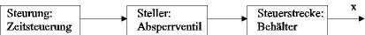

Der Behälter wird Zeitgesteuert befüllt. Jedes mal wenn Spüle getrückt wird, wird der Füllzeit 30 Sekunden hinzugefügt. Beim ersten Befüllen wird der Behälter fast ganz befüllt. Beim Spülen wird der Behälter nicht ganz befüllt, weil wegen des Abflusses weniger Wasser im Behälter bleibt. Wenn man mehrere Male kurz hintereinander drückt kann man den Behälter zum Überlaufen bringen. Die Steuerung hat keine Rückkopplung über den Füllstand im Behälter. Natürlich könnte man eine Steuerung etwas sicherer gestalten.
Das Blockschaltbild für die Steuerung ist unten abgebildet:
Autor: Harald Schellinger